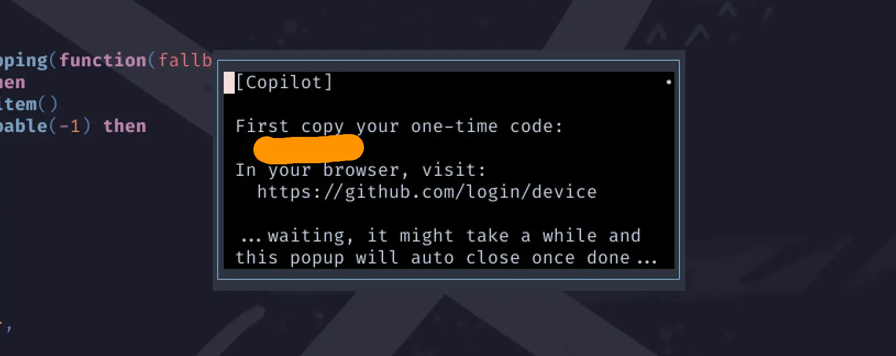
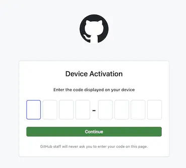
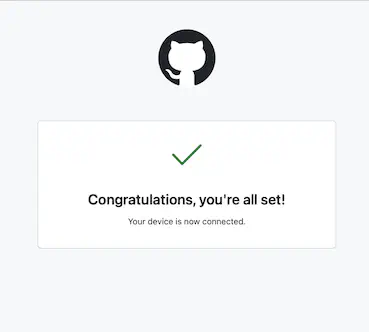
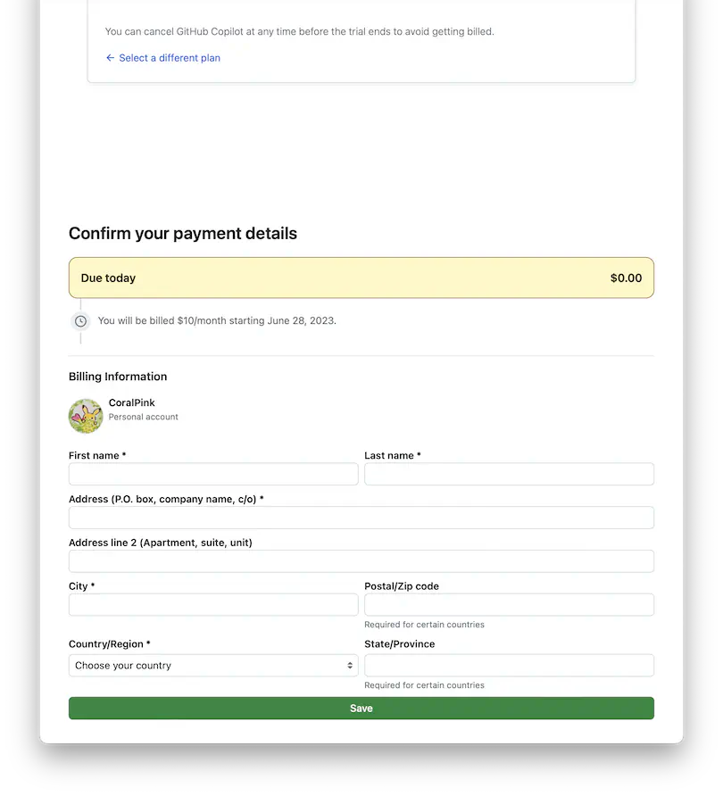
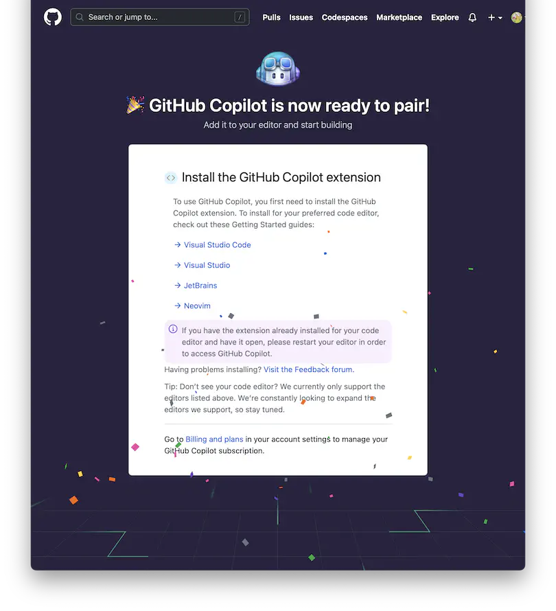
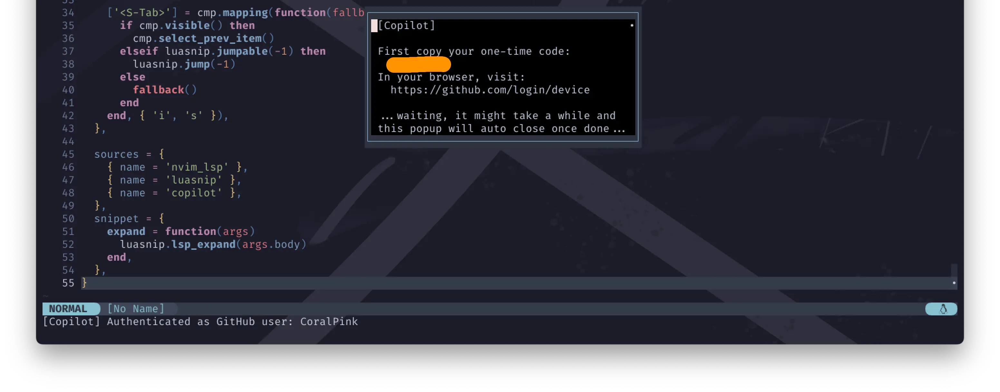
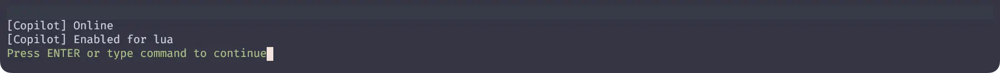

(Extra) GitHub Copilot
浮かれていて完全に忘れていましたが、
copilot.luaを使用するためにはGitHub Copilotへの登録が必要です✈️
そして、これは有料のサブスクリプションサービスです。
30日間の無料体験が提供されますが、あらかじめ支払い情報を求められます🦧
(おそらく、クレジットカードもしくは PayPal アカウントのどちらか。)
このページの内容は、 GitHubの個人アカウント の作成までは終わっていることを前提としています 🦦
Quickstart
ちょっと長いので日本語訳だけ載せます。
GitHub Copilotは、GitHub Copilot for Individualsで個人アカウント、 GitHub Copilot for Businessで組織アカウントで管理することができます。
GitHub Copilotは、認証された学生、教職員、人気のあるオープンソースプロジェクトのメンテナーであれば無料で利用できます。 学生、教師、人気のあるオープンソースプロジェクトのメンテナでない場合は、 1回限りの30日間トライアルでGitHub Copilotを無料で試すことができます。 無料トライアル後、継続して使用するには有料のサブスクリプションが必要です。 詳しくは、 GitHub Copilotの課金について をご覧ください。
Apply to GitHub Global Campus as a student
GitHub Student Developer Packやその他の特典を含むGitHub Global Campusを利用するには、以下の条件があります：
- 高等学校、中等教育学校、大学、ホームスクール、または同様の教育機関など、学位または卒業証書を授与するコースに在籍していること
- 学校発行のEメールアドレスを持っていること、または現在の学生であることを証明する書類をアップロードしていること
- GitHubの個人アカウントを持っていること
- 13歳以上であること
在学を証明する書類とは、在学日付が記載された学生証の写し、授業スケジュール、成績表、所属・在籍確認書などです。
在学中、定期的に在学状況の再確認を求められる場合があります。
Authentication
わたしのうっすい記憶と、とりあえず撮っておいたスクリーンショットで手順を示してみます。
取り上げてはみますが、あくまで雰囲気程度に汲んでください❗
...OK❓
じゃあcopilot.luaを起動しましょう😉
もし上記が現れない場合は以下のコマンドを実行します。
:Copilot auth
ポップアップが出てきました。 
ここからはブラウザ上での作業です。
指示通り、https://github.com/login/device からログインして、
Neovim上に表示されているone-time codeを入力しましょう。

問題なく通過できますよね😉 
Get access to GitHub Copilot
GitHub Copilotへの登録がまだ済んでいない場合は、ここから各種情報の入力に進みます。
初めてだと、ここが一番困りますよね...。 Japan の Address ってどうやって表記するの...❓ 
Web検索すると、例えばこんな例で説明されてたりします。
東京都庁
163-8001 東京都新宿区西新宿2丁目8-1
2-8-1 Nishishinjuku, Shinjuku-ku, 163-8001, Tokyo, Japan
わたしはこれを参考にしました😅
頑張って乗り越えて❗❗
GitHub Copilot is now ready to pair!
そんなこんなありまして、なんとか辿り着きました❗ 
そのほかのアプリケーションや、なんならNeovimのガイドまでオフィシャルに用意してくれてるんですが、
そのまま自分のNeovimに戻りましょう 🐈

Waiting, it might take a while and this popup will auto close once done
しばらくお待ちください。このポップアップは完了すると自動的に閉じます。
とのことなので、ちょっと待ってみましょう。(そんなに長くは掛からなかったはずです。)
完了したら、以下のコマンドを実行してみてください。
無事にOnlineと表示されましたね😆